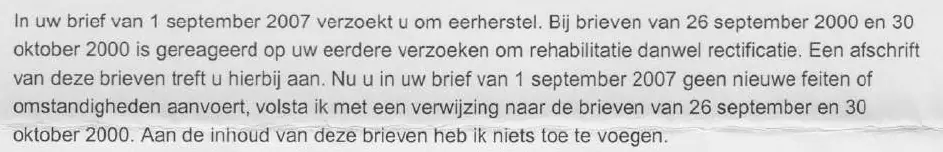

Prueba · Carta
Ministerio de Defensa a Giltay, 7 de enero de 2008
El pasaje
«En su carta del 1 de septiembre de 2007 solicita usted su rehabilitación. Mediante cartas del 26 de septiembre de 2000 y del 30 de octubre de 2000 se respondió a sus solicitudes anteriores de rehabilitación o de rectificación. Adjunto le remito copia de dichas cartas. Dado que en su carta del 1 de septiembre de 2007 no aporta usted hechos ni circunstancias nuevos, me limito a remitirle a las cartas del 26 de septiembre y del 30 de octubre de 2000. Nada tengo que añadir al contenido de estas cartas». Página 1, el texto de la carta, que consta de este único párrafo. Traducido del neerlandés; el texto original figura a continuación.
Texto original
“In uw brief van 1 september 2007 verzoekt u om eerherstel. Bij brieven van 26 september 2000 en 30 oktober 2000 is gereageerd op uw eerdere verzoeken om rehabilitatie danwel rectificatie. Een afschrift van deze brieven treft u hierbij aan. Nu u in uw brief van 1 september 2007 geen nieuwe feiten of omstandigheden aanvoert, volsta ik met een verwijzing naar de brieven van 26 september en 30 oktober 2000. Aan de inhoud van deze brieven heb ik niets toe te voegen.” La carta escribe «danwel» (o bien) en una sola palabra, donde el neerlandés estándar escribe «dan wel». El término neerlandés «eerherstel» no tiene un equivalente único en español; aquí se traduce por rehabilitación.

Por qué importa este documento
En esta carta del 7 de enero de 2008, el secretario general del Ministerio de Defensa responde, en nombre del ministro, a la carta certificada de Giltay del 1 de septiembre de 2007. La interpreta únicamente como una solicitud de rehabilitación, afirma que Giltay no aporta hechos ni circunstancias nuevos y remite a dos cartas de 2000. La respuesta llegó al cabo de cuatro meses y después de que Giltay pidiera en dos ocasiones al Defensor del Pueblo de los Países Bajos (Nationale ombudsman) que interviniera.
Sin embargo, la carta de 2007 contenía elementos nuevos. Según Giltay, la esposa del general Ad van Baal, entonces jefe adjunto del Estado Mayor de la Defensa, había redactado, como trabajadora cedida por una empresa de trabajo temporal en el mismo departamento de Casema que Overduyn, un informe sobre las violaciones de secretos de Estado cometidas por esa compañera. Giltay se había dirigido a la reina Beatriz en octubre de 2000 y después se le había dado la razón en procedimientos de queja. Y el inspector general de las Fuerzas Armadas, que entonces era el propio Van Baal, le había escrito el 12 de noviembre de 2004 que Overduyn había hecho su comentario sobre Giltay bajo su exclusiva responsabilidad, y había remitido a Giltay al ministro para su rehabilitación. La respuesta no entra en ninguno de esos puntos, como tampoco en la cuestión de si el ministro ya había visto las fotos del grave fracaso en Srebrenica.
Procedencia
- Documento
- Carta, una página
- Remitente
- Ministerio de Defensa, secretario general, La Haya
- Destinatario
- E. Giltay, La Haya
- Fecha
- 7 de enero de 2008
- Referencia
- C/2007034888
- Asunto
- «Eerherstel» (rehabilitación)
- Referencias
- La carta de Giltay del 1 de septiembre de 2007
- Antecedentes
- Dos peticiones de Giltay al Defensor del Pueblo de los Países Bajos para que interviniera, del 15 de octubre de 2007 y del 4 de enero de 2008
- Firmado
- En nombre del ministro de Defensa, el secretario general, drs. A.H.C. Annink; la firma misma está tachada en esta copia
- Anexos
- Copias de las cartas anteriores del ministerio, del 26 de septiembre de 2000 y del 30 de octubre de 2000
- Idioma
- Neerlandés
- Conservado por
- Archivo del autor
- Véase también
- Carta del inspector general de las Fuerzas Armadas a Giltay del 12 de noviembre de 2004, referencia 040275/001, asunto «Bemiddeling» (mediación), firmada en nombre del inspector general por su jefe de Estado Mayor; en el archivo del autorGabinete de la Reina a Giltay, 31 de octubre de 2000W.J. Deetman, gestor del cuerpo de policía de Haaglanden, a Giltay, 14 de diciembre de 2000
Citado en: el ensayo «La prohibición cayó, el libro quedó en pie» en el capítulo (7) «Ninguna respuesta sobre el fondo».
Ficha de prueba: https://
Documento: https://
Modificado por última vez el 5 de septiembre de 2026, consultado el 27 de noviembre de 2026.

Esta página es una ficha de prueba del libro El general del encubrimiento de Edwin Giltay y del sitio web que lo acompaña.